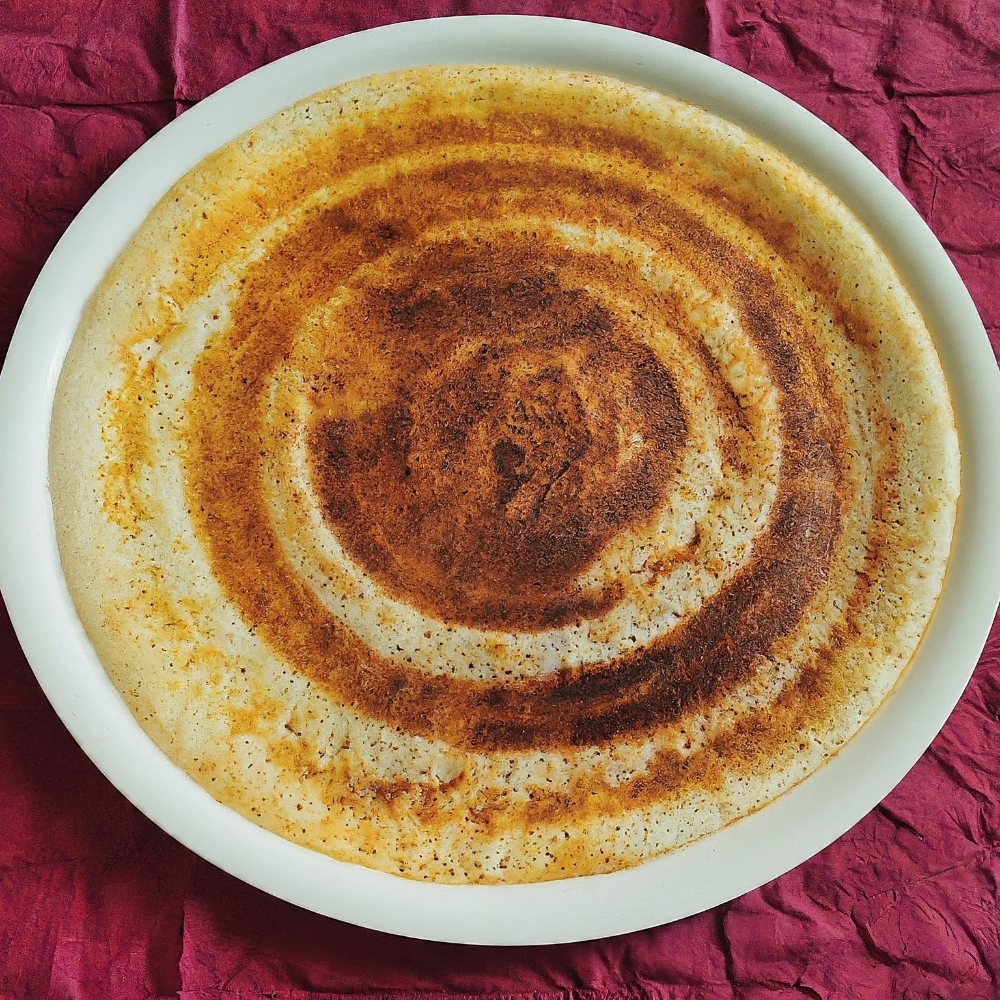
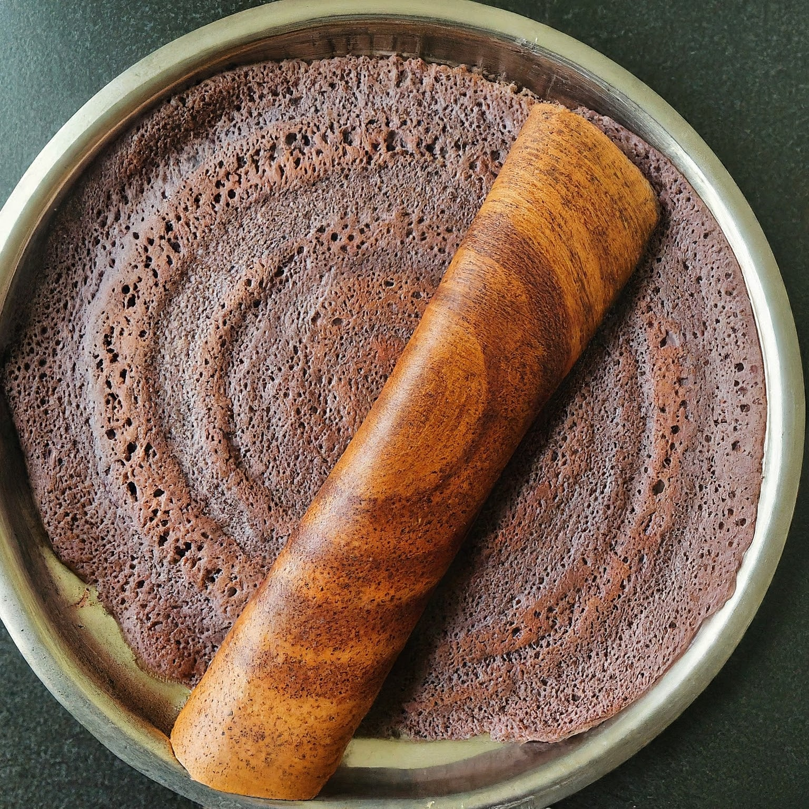
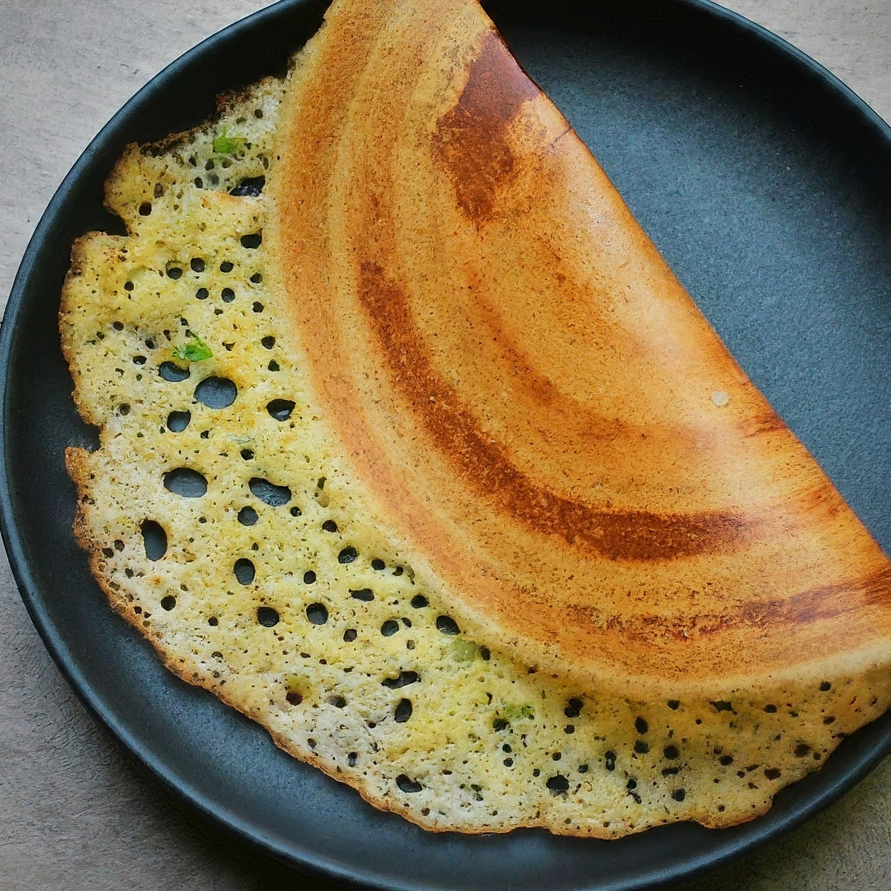
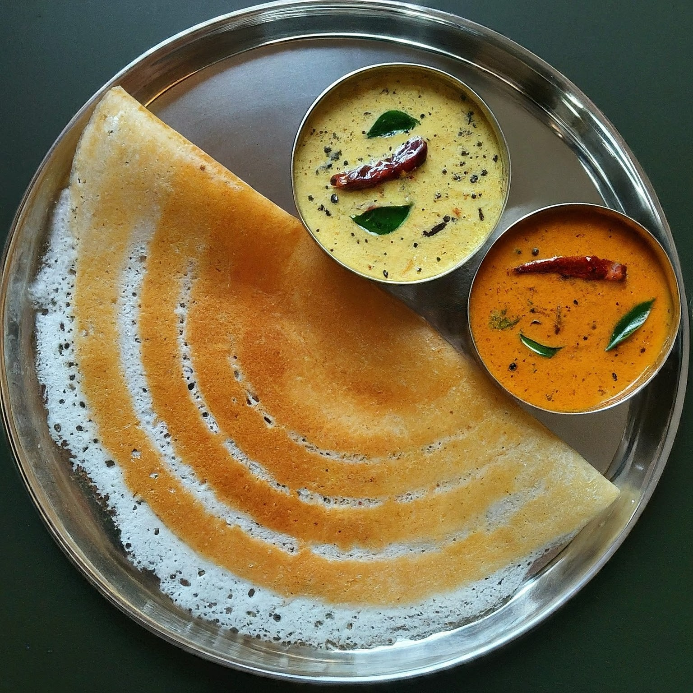
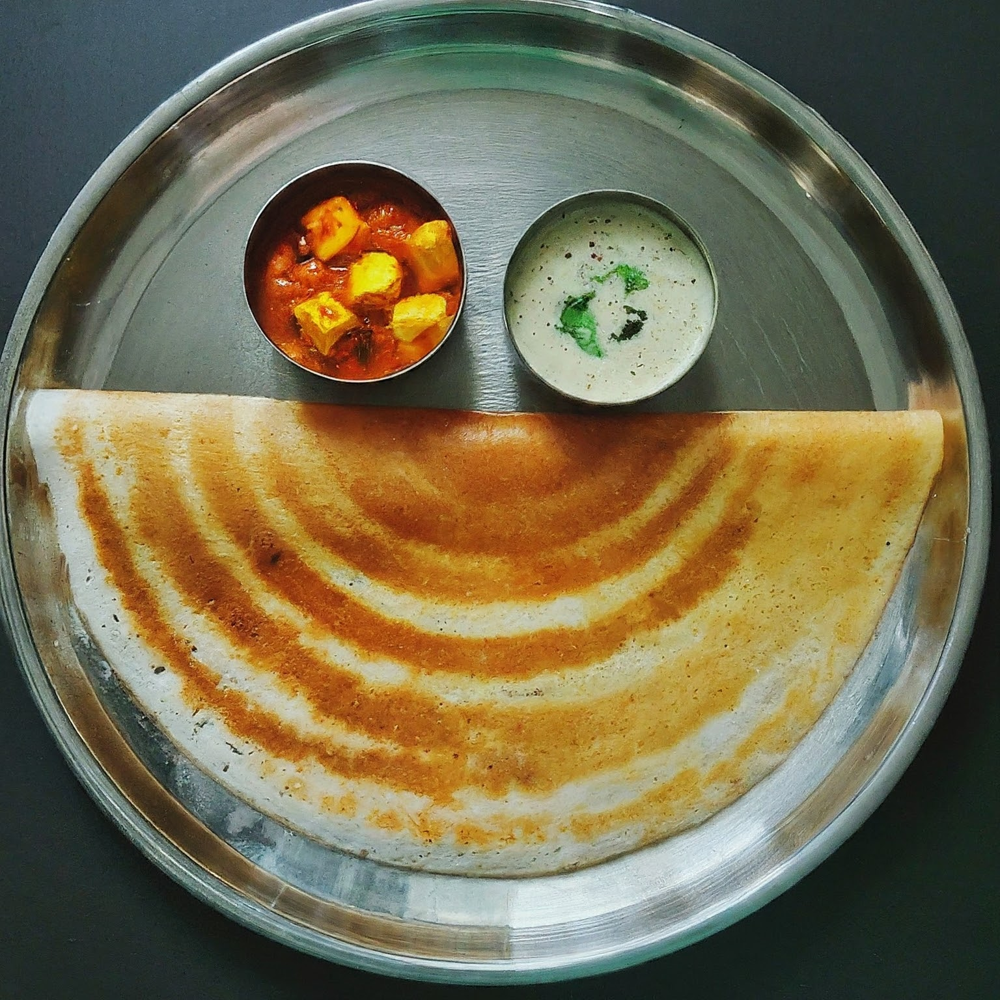

Delicious Dosa Recipes
Welcome to our collection of delicious dosa recipes! Dosas are a staple of South Indian cuisine, offering a crisp, golden exterior with a soft, flavorful center. Whether you love them plain or packed with a spicy filling, we have a variety of dosa recipes for you to try. Below are some of the best dosa variations you can make using our fresh batter at Battermami.
1. Classic Masala Dosa

Ingredients for Filling:
- 4 medium-sized potatoes, boiled and mashed
- 1 onion, thinly sliced
- 2 green chilies, finely chopped
- 1 tsp mustard seeds
- 1/2 tsp turmeric powder
- Curry leaves
- 2 tbsp oil
- Salt to taste
Instructions:
- Heat oil in a pan and add mustard seeds. Once they splutter, add curry leaves and chopped green chilies.
- Add sliced onions and sauté until golden brown.
- Add turmeric powder, mashed potatoes, and salt. Mix well and cook for 5 minutes.
- To make the dosa, pour a ladle of batter on a hot tawa, spread it thin, and drizzle oil around the edges.
- Cook until crispy and golden. Add the potato filling and fold the dosa. Serve with chutney and sambar.
2. Ragi Dosa

Ragi Dosa is a nutritious alternative made from finger millet (ragi). It’s rich in calcium, iron, and fiber.
Ingredients:
- 1 cup ragi flour
- 1/2 cup rice flour
- 1/4 cup curd
- 1 tsp cumin seeds
- Salt to taste
- Water as required
Instructions:
- Mix ragi flour, rice flour, curd, cumin seeds, and salt in a bowl. Add water to make a thin, flowing batter.
- Let the batter rest for 15-20 minutes.
- Heat a tawa and pour the batter, spreading it into a thin circle.
- Drizzle oil around the edges and cook until crispy.
- Serve with chutney or sambar.
3. Onion Rava Dosa

Onion Rava Dosa is a crispy, lacey dosa made from semolina (rava) and rice flour, topped with chopped onions and green chilies.
Ingredients:
- 1 cup rava (semolina)
- 1/2 cup rice flour
- 2 tbsp all-purpose flour (maida)
- 1/2 tsp cumin seeds
- 2 green chilies, finely chopped
- 1/4 cup finely chopped onions
- Water as required
- Salt to taste
Instructions:
- Mix rava, rice flour, and maida in a bowl. Add salt, cumin seeds, green chilies, and onions. Gradually add water to make a thin batter.
- Heat a tawa and pour the batter from a height in a circular motion to create a lace-like effect.
- Drizzle oil around the edges and cook until golden and crispy.
- Serve hot with coconut chutney and sambar.
4. Neer Dosa

Neer Dosa is a delicate, thin, and soft dosa made from rice batter. It's perfect when served with coconut chutney or fish curry.
Ingredients:
- 1 cup raw rice (soaked for 4 hours)
- Salt to taste
- Water as required
- Oil for cooking
Instructions:
- Grind the soaked rice with water to make a smooth, flowing batter.
- Add salt and more water if required to make the batter thin (like buttermilk consistency).
- Heat a non-stick tawa and pour the batter. Swirl the pan to spread the batter evenly.
- Cook for 1-2 minutes without flipping. Serve immediately with chutney or curry.
5. Paneer Dosa

A twist on the classic dosa, Paneer Dosa is stuffed with spiced grated paneer, making it a protein-packed option for any meal.
Ingredients for Filling:
- 1 cup grated paneer
- 1 onion, finely chopped
- 2 green chilies, finely chopped
- 1/2 tsp garam masala
- Salt to taste
- 2 tbsp oil
Instructions:
- Heat oil in a pan and sauté the onions, green chilies, and paneer. Add garam masala and salt. Mix well.
- Spread dosa batter on a hot tawa, cook until crispy, then add the paneer filling and fold the dosa.
- Serve with chutney or ketchup.